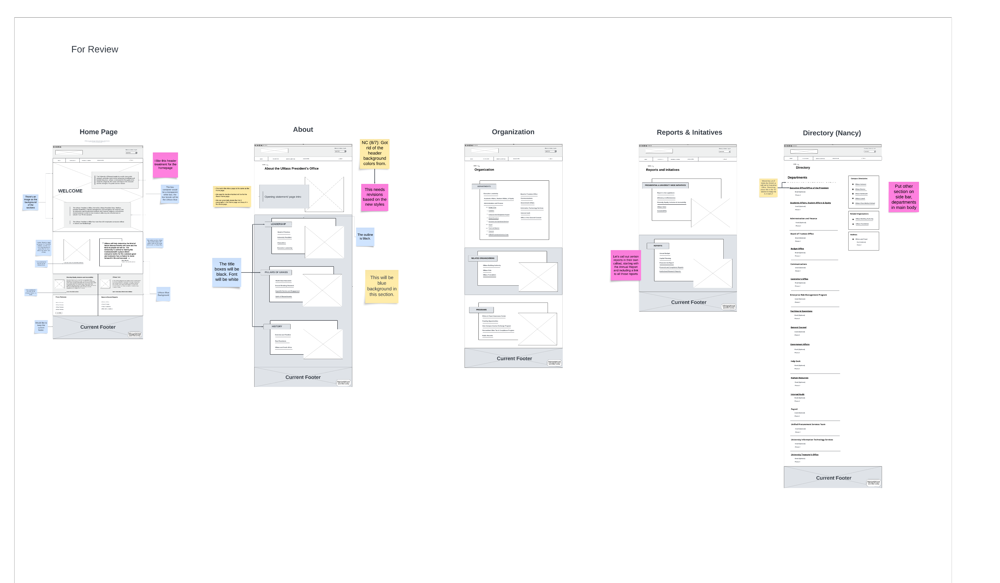
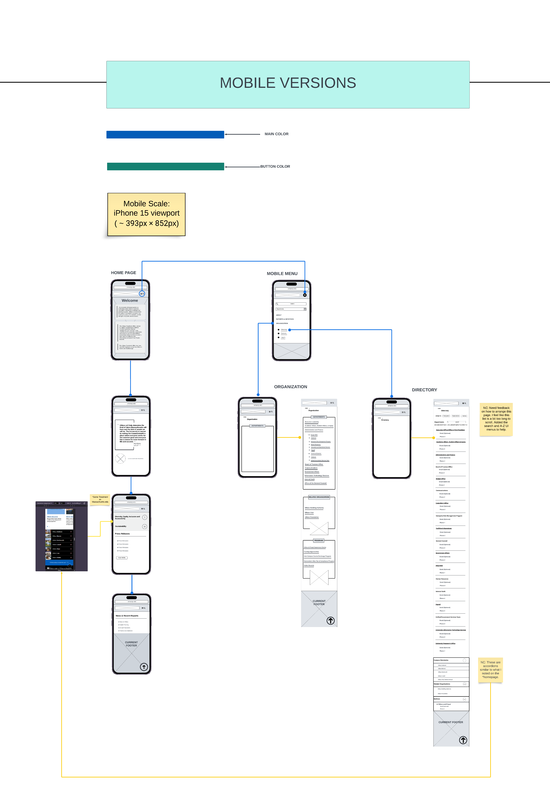
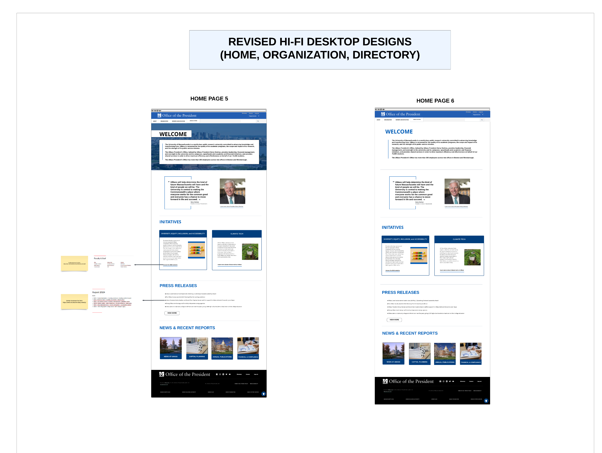

<!DOCTYPE html>
<html lang="en">
    <head>
        <meta charset="UTF-8"/>
        <meta name="viewport" content="width=device-width, inital-scale=1"/>
        <title>Nancy Chac | UMPO Website Refresh/title>
        <link rel="preconnect" href="https://fonts.googleapis.com">
        <link rel="preconnect" href="https://fonts.gstatic.com" crossorigin>
        <link href="https://fonts.googleapis.com/css2?family=Poppins:ital,wght@0,100;0,200;0,300;0,400;0,500;0,600;0,700;0,800;0,900;1,100;1,200;1,300;1,400;1,500;1,600;1,700;1,800;1,900&display=swap" rel="stylesheet">
        <link rel="stylesheet" href="css/project-page.css">
        <!--- LIGHTBOX -->
        <link
        rel="stylesheet"
        href="https://cdnjs.cloudflare.com/ajax/libs/glightbox/3.3.0/css/glightbox.min.css"
        />
        <script src="https://cdnjs.cloudflare.com/ajax/libs/glightbox/3.3.0/js/glightbox.min.js"></script>
    </head>

    <body>

<!-- MENU -->
<header>
  
  <nav>
    <ul class="nav_links">
      <li><a href="index.html">HOME</a></li>
      <li><a href="graphic-design.html">GRAPHIC DESIGN</a></li>
      <li><a href="about.html">ABOUT</a></li>
    </ul>
  </nav>
  <a class="cta" href="https://drive.google.com/file/d/1hA15FBmro3z_ownChAtHwjDcd-ZUZ3iu/view?usp=sharing" target="_blank"><button>RESUME</button></a>
  <div id="hamburger-icon" onclick="toggleMobileMenu(this)">
    <div class="bar1"></div>
    <div class="bar2"></div>
    <div class="bar3"></div>
      <ul class="mobile-menu">
          <li><a href="index.html">HOME</a></li>
          <li><a href="graphic-design.html">GRAPHIC DESIGN</a></li>
          <li><a href="about.html">ABOUT</a></li>
          <li><a href="https://drive.google.com/file/d/1hA15FBmro3z_ownChAtHwjDcd-ZUZ3iu/view?usp=sharing">RESUME</a></li>
      </ul>
      <script>
        function toggleMobileMenu(menu) {
        menu.classList.toggle('open');
        }
      </script>
  </div>
</header>

    <!-- PAGE INTRO  -->
    <section class="project-intro">
      <div class="project-title">
        <h1>UMASS PRESIDENT'S OFFICE WEBSITE REFRESH</h1>
        <p>
          
          UX/UI Design • Web Content & Development • Branding
        </p>
      </div>
        <div class="project-details">
          <ul class="detail-list">
            <li>Timeline: June 2024 - Present</li>
            <li>Team: Digital Experience (DX) & Communications</li>
            <li>Role: UX/UI Designer</li>
            <li>Project Type: Professional Work</li>
            <li>Tools: Lucid, Drupal</li>
          </ul>
          <a href="https://www.umassp.edu/" target="_blank"><button> CURRENT WEBSITE </button></a>
        </div> 
    </section>
    <!-- BACKGROUND-->
    <section class="background">
      <h2>BACKGROUND</h2>
        <p>
          The UMass President's Office website presents information about the UMass System and is an information hub for employees.
          The Digital Experience (DX) and Communications teams oversee the organization's website. 
          It has not been updated for years so both teams are looking to refresh the website's design and 
          content so it further aligns with the university's initiatives. 
          DX is updating the website's layout to make it more user-friendly, accessible, and scalable for mobile. 
          Communications is updating the web content retaining the university. 
          They are updating the brand guide and document templates.
        </p>
    </section>
 
 <!-- PROCESS -->  
 <section class="process">
  <h2>PROJECT PROCESS</h2>
  <ol type="1">
    <li>ORIGNAL STATE</li>
    <p>
      The website is a resource for employees in HR, IT, and services used in the university. It is developed using Drupal.
      The main design issue was the header images taking up the majority of the pages when users visit. 
      Also, there are outdated images and information about the university. 
      The main objective for the refresh is to update the page templates and give them a modernized look while making them more accessible to users.
    </p>
    <li>PEER RESEARCH</li>
    <p>
      I looked into other universities (i.e., MIT, Princeton, and Yale) that have used Drupal for their websites. 
      I took notes on potential ideas we could take inspiration from and apply them to the President's Office site. 
      The UMass System website was another reference because the template resembled a modernized version of the President's Office.
      The following image is an idea board with all of my research notes:
    </p>    
    

    <li>CONTENT PLANNING & DESIGN</li>
    <p>
      Both teams discussed what should be updated on the website. 
      They are aiming to update the content on the homepage and brand guide with the addition of accessibility guidelines.
      The DX team is also aiming to improve the main navigation and visibility of the department directory. 
      I'm involved with both sides of the design process. 
      In Communications, I developed rough drafts of the brand guide and document templates. 
      In DX, I assisted in low and high-fidelity designs for the proposed updated site template.
    </p>
  </ol>
</section>

 <!-- CONTENT & DESIGN -->
 <section class="wireframe">
  <h2>WIREFRAME</h2>   
  <div class="wireframe-details">
    <ul>
      <li>
        These are the first round of desktop and mobile low-fidelity wireframes before creating the high-fidelity versions.
        These wireframes were created on Lucidchart from the Lucid Visual Collaboration Suite.
        One important change I made was adding a tab to the UMass System website at the top navigation.
        It is currently on the footer which is difficult for users to notice.
        I decided to add it to the top navigation so users can differentiate between the President's Office and the System sites.
    </li>
  </div> 
    
   
   <div class="wireframe-details">
    <ul>
      <li>
        These are high-fidelity designs I collaborated with the DX intern using Lucidchart. 
        We assigned specific pages for ourselves to do and regrouped with the DX team for review.
        I designed the Home, Organization, and Directory pages. 
        This is the latest version of the proposed design.  
      </li>  
    </ul>
  </div> 

      
    

       <!--- LIGHTBOX SCRIPT -->
   <script>
    // This line is required to call the lightbox for the page.
    var lightbox = GLightbox();
  
    // Optional code just to see if it worked.
    lightbox.on('open', (target) => {
        console.log('lightbox opened');
    });
  </script>
</section>

     <!-- OUTCOME -->
     <section class="outcome">
      <h2>OUTCOME</h2>
      <p>
        This project is currently in the first phase which was removing the large header images from the product site.
        The next phase includes updating the brand guide and templates. 
      </p>
    </section>

        <!--REFLECTION-->
        <section class="reflection">
          <h2>REFLECTION</h2>
            <p>
            This project crosses over two teams I am working with in my fellowship. 
            It is a great opportunity for me to work on both sides of the project team. 
            I'm able to apply my marketing background to creating brand guides and templates. 
            There is also the opportunity to utilize the UX skills I've learned since working with DX.
            I also learned about creating high-fidelity and mobile wireframes. 
            In the next steps, I anticipate to futher work on the brand design with Communications. 
            Also, web content and user testing with the DX team.
            </p>
        </section>

    <!-- LINKS TO PREV AND NEXT PAGES -->
    <section class="next-navigation-only">
    <a href="uits-knowledge-base.html"><button> NEXT PROJECT </button></a>
  </section>
<!-- FOOTER -->
  <hr/>
  <footer>
    <ul class="socials">
      <p>Let's Connect!</p>
      <li>
        <a href="https://www.linkedin.com/in/nancy-chac/" target="_blank"
          ></a>
      </li>
      <li>
        <a href="mailto:nancy.chac18@gmail.com" target="_blank"
          ></a>
      </li>
    </ul>
    <p>© 2024 Designed and Developed by Nancy Chac</p>
  </footer> 
   </body>
</html>
